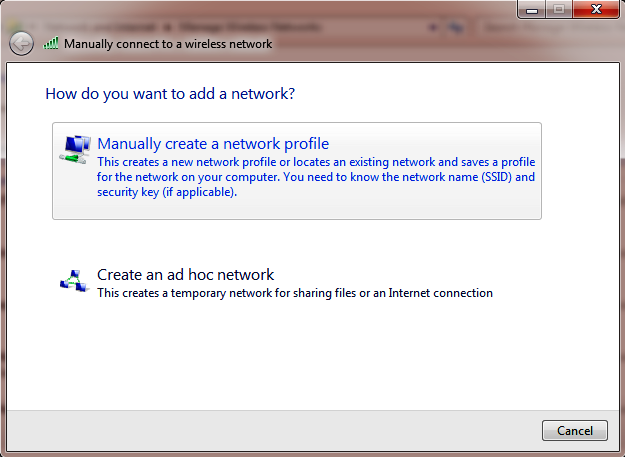
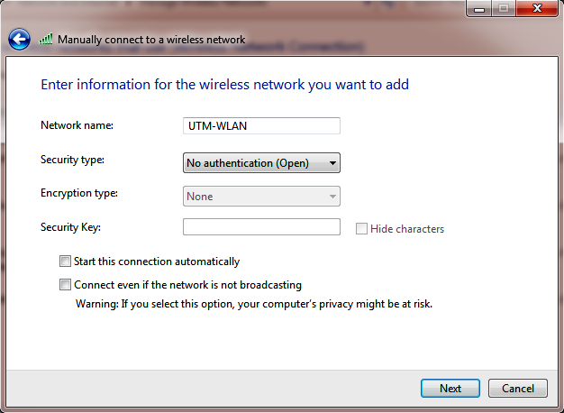
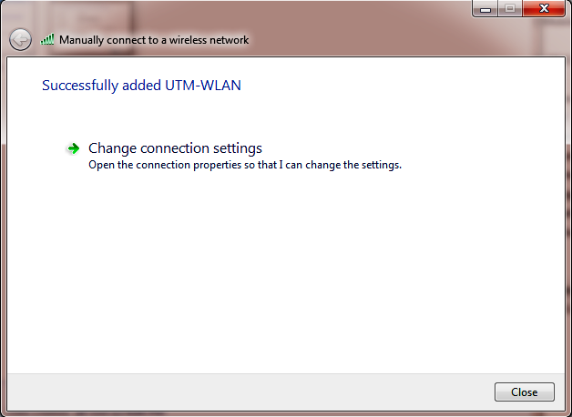

Download Section:
(Downloaded#:
)
IMPORTANT: For the software to work, the following steps below needs to be done.
Don't forget to run the program as Administrator
Manually Creating a Wireless Network Profile
1. Click Start -> Control Panel -> Network and Internet -> Network and Sharing Centre.
2. Click on Manage wireless networks.
3. Click on the Add button.
4. Select Manually create network profile.

5. Enter the network name i.e UTM-WLAN (this name is cAsE
sEnSiTiVe!), select No Authentication (Open) as security type, and None will be automatically selected as encryption type. Start this connection automatically should be unticked. Click Next to continue.

6. Click on Close button.
